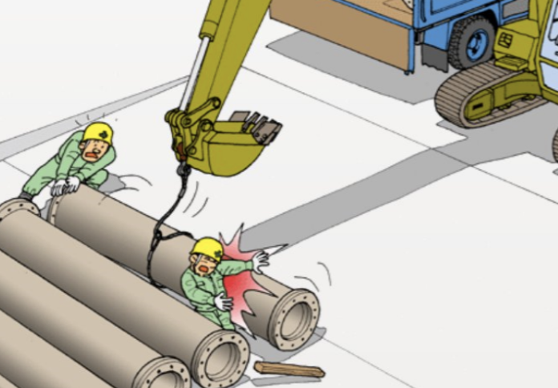
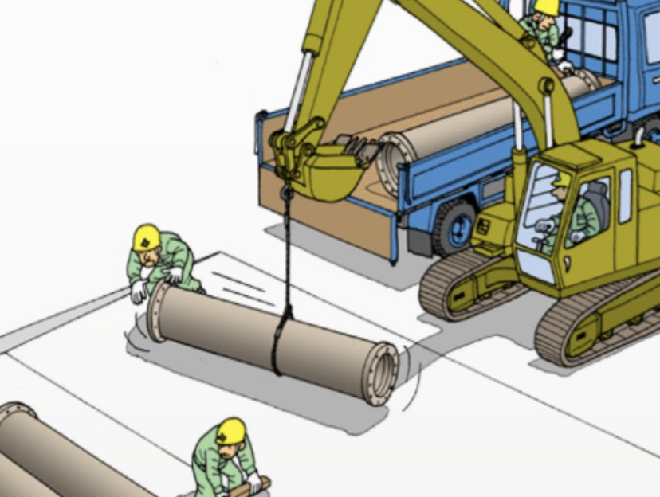

Navega por las pestañas para explorar cada concepto de riegos e izajes críticos.
CMAA (Sociedad Americana de Fabricantes de grúas)
Principales riesgos identificados durante las maniobras de izaje
Atrapamiento entre las paredes y postes.
Caída al estrobar, recepcionar o desestrobar la carga
Contacto con un objeto punzocortante durante la preparación o manejo de la carga.
Caída de objetos, total o parcialmente durante la maniobra.
Choque contra material apilado o paredes y postes.
Sobreesfuerzo o esfuerzo muscular al manipular objetos por parte del maniobrista


IZAJES CRÍTICOS
Es toda acción que involucre riesgos a personas por trabajos de izajes de objetos de gran tamaño y peso.
Existen izajes que se vuelven críticos debido a:
Cargas de contenidos con fuentes radiactivas o materiales peligrosos.
Daños indetectables que pueden poner en peligro futuras operaciones.
Cargas voluminosas, peso o tolerancias ajustadas en las instalaciones. Para estos casos, se requiere de un responsable en la operación (supervisor de izajes).
Los procedimientos de izaje debe ser revisados y aprobados antes de ser ejecutados.
Se debe realizar una reunión previa con el personal involucrado antes de iniciar la operación.